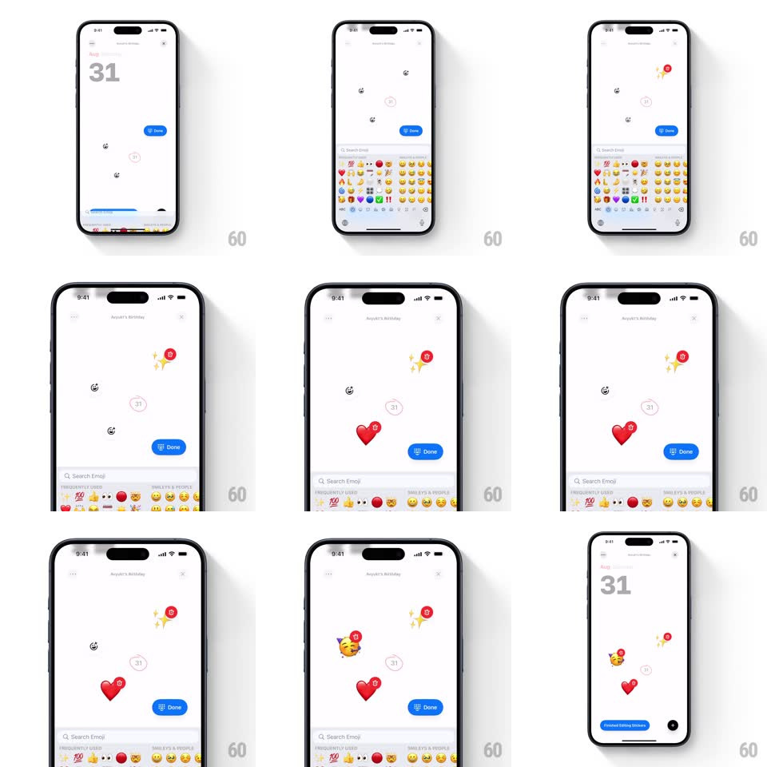

Media
Frame-by-frame

Rebuild this interaction 1:1: Canopi's sticker canvas - from a date page ("Aug Saturday 31"), Add Stickers raises an emoji picker sheet, and each tapped emoji springs onto the canvas as a draggable sticker with a count badge; Done commits the collage back onto the date.

Rebuild this interaction 1:1: Canopi's sticker canvas - from a date page ("Aug Saturday 31"), Add Stickers raises an emoji picker sheet, and each tapped emoji springs onto the canvas as a draggable sticker with a count badge; Done commits the collage back onto the date.
## Integration
Integration: stack-agnostic spec - springs given as stiffness/damping, timed motions as duration + curve; map every value to your framework and animation library of choice.
## Scene
White date canvas with big "31" and weekday header, faint calendar grid behind. Edit mode: emoji keyboard sheet at half height (search field, recents row, category icons), blue Done pill floating above it. Placed stickers (red hearts with "10" badges, sparkles, party face) sit on the canvas. Exit shows "Replaced Existing Stickers" action.
## Motion spec
Pattern: spring-placed sticker collage.
- Tap Add Stickers: the emoji sheet rises (spring ~320/26, ~350ms); the canvas dims slightly and the date shrinks to a faint watermark behind the editing area.
- Tap an emoji: a sticker springs onto the canvas center-top with a bounce (scale 0.2 -> 1.15 -> 1, spring ~380/16, ~400ms) and lands at a slight random rotation (±8deg); tapping the same emoji again increments its red count badge (badge pops scale 0.5 -> 1 per increment).
- Drag any sticker freely; release gives it a tiny settle bounce; dragging over the sheet area dims the sticker to hint removal.
- Tap Done: the sheet slides down (280ms), stickers settle with a 200ms stagger (each scales 1 -> 0.92 -> 1), and the canvas returns to the date view showing the collage in place.
- A confirmation pill ("Replaced Existing Stickers" or similar) slides up from the bottom (spring ~340/24) and auto-dismisses after ~2s.
## Calibration
- Sticker rotation is assigned at placement and persists - the collage looks hand-placed.
- Count badges track taps of the same emoji, not separate stickers.
## Reduced motion
Stickers fade in at their positions without bounce; sheet crossfades.
## Don't miss
- The emoji sheet is the system-style keyboard grid, not a custom picker.
- Placed stickers persist on the date view at reduced size - the canvas is a preview of the decorated date.